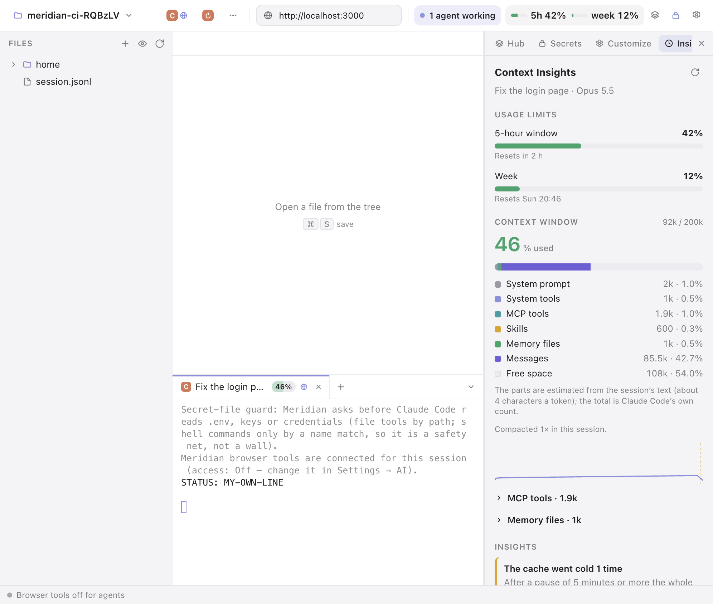

git in the Workbench, and site searches work in the command bar again.git прямо в Workbench, и поиск по сайтам в командной строке снова работает.
Source Control in the WorkbenchSource Control в Workbench
The branch and the number of changes sit in the top bar. The panel lists the changed files; a click shows the diff side by side. Stage, unstage or discard, commit with a message, switch or create a branch, pull and push, and see the recent commits. With the GitHub CLI installed, see the pull requests and create one.Ветка и число изменений видны в верхней панели. Панель показывает изменённые файлы, по клику — дифф бок о бок. Можно добавить в коммит, убрать или отменить изменения, закоммитить с сообщением, переключить или создать ветку, сделать pull и push, посмотреть последние коммиты. Если установлен GitHub CLI, видны пулл-реквесты, и можно создать новый.

FixedИсправлено
- Site searches (yours, or the ones that came from Arc or Chrome) work in the command bar again: "kiwi pear" searches the site "kiwi" is for, not Google.Поиск по сайтам (ваш или перенесённый из Arc и Chrome) снова работает в командной строке: «kiwi pear» ищет на сайте, к которому привязано «kiwi», а не в Google.
0.6.11
November 19, 2026Move in from Google Chrome: bookmarks, open tabs, sign-ins, passwords, history and extensions, a space per Chrome profile.Переезд из Google Chrome: закладки, открытые вкладки, входы на сайты, пароли, история и расширения, по пространству на каждый профиль Chrome.
Import from Google ChromeИмпорт из Google Chrome
File › Import from Chrome… (and the welcome tour, when Arc isn't on your computer). Each Chrome profile becomes a space with its name from Chrome: its bookmarks become pinned tabs and folders, the tabs you had open come over as Today tabs that load only when you open them. Chrome's other profiles get Meridian profiles of their own.Файл › Import from Chrome… (и в приветственном туре, если Arc на компьютере нет). Каждый профиль Chrome становится пространством с тем же именем: закладки — закреплёнными вкладками и папками, открытые вкладки — вкладками Today, которые загрузятся, только когда вы их откроете. Другие профили Chrome получают свои профили в Meridian.
- Along with it: sign-ins, saved passwords and cards, history, form entries, addresses, site permissions, site searches, sites' data and Chrome Web Store extensions. Nothing leaves your computer, and Chrome stays as it is.Вместе с этим: входы на сайты, пароли и карты, история, автозаполнение, адреса, разрешения сайтов, поисковые системы сайтов, данные сайтов и расширения из Chrome Web Store. Ничего не покидает компьютер, Chrome остаётся как был.
- On Windows, Chrome locks its sign-ins to itself, so you sign in to your sites once more there; passwords and cards come over all the same.На Windows Chrome запирает входы на сайты, поэтому там придётся войти заново; пароли и карты переносятся.
0.6.10
November 19, 2026Agents no longer get stuck on a tab in the background, page dialogs are theirs to answer, and Claude Code started in a shell tab is a full Claude Code tab.Агенты больше не зависают на фоновой вкладке, сами отвечают на диалоги страниц, а Claude Code, запущенный в обычной вкладке терминала, работает как полноценная вкладка Claude Code.
Agents answer the page's own dialogsАгенты отвечают на диалоги страниц
When a page shows an alert, a confirm, a prompt or "Leave site?", an agent sees it and answers it with the new handle_dialog tool. In "Ask before acting" mode you confirm it first; permission prompts, file pickers and sign-in dialogs stay yours.Когда страница показывает alert, confirm, prompt или «Покинуть сайт?», агент видит это и отвечает новым инструментом handle_dialog. В режиме «Спрашивать перед действием» вы сначала подтверждаете; запросы разрешений, выбор файла и окна входа остаются за вами.
Claude Code in a shell tabClaude Code во вкладке терминала
Typing claude in a Workbench shell tab (your own alias too) gives it what a Claude Code tab gets: its name and context on the tab, Context Insights, Mission Control, the permission card, and it comes back after a restart in its permission mode. macOS for now.Если набрать claude в обычной вкладке терминала Workbench (и через ваш алиас тоже), она получает всё, что есть у вкладки Claude Code: имя и заполненность контекста, Context Insights, Mission Control, карточку разрешений, и после перезапуска возвращается в своём режиме. Пока на macOS.
- Terminal tabs move with a drag.Вкладки терминала перетаскиваются мышью.
FixedИсправлено
- An agent's calls into a tab in the background could hang for many minutes, and every other tool waited too. Now the tab an agent works in stays awake, a page that doesn't answer is an error after 20 seconds, and calls no longer wait in line.Вызовы агента во вкладку в фоне могли висеть много минут, и все остальные инструменты ждали вместе с ними. Теперь вкладка, с которой работает агент, не засыпает, страница, которая не отвечает, через 20 секунд даёт ошибку, а вызовы не ждут друг друга.
0.6.9
November 19, 2026Answer your agents from any page, see every space in Mission Control, and bring your own AI server.Отвечайте агентам с любой страницы, смотрите все спейсы в Mission Control и подключайте свой ИИ-сервер.
Your agent asks, you answer from anywhereАгент спрашивает — отвечаете откуда угодно
When Claude Code in the Workbench needs a permission, a small card shows over whatever page you're on, in any space: which session wants what. Allow, Deny or Always allow right there, or Open to go to its terminal.Когда Claude Code в Workbench просит разрешение, поверх любой страницы в любом спейсе появляется небольшая карточка: какая сессия и что хочет. Allow, Deny или Always allow — прямо там, или Open, чтобы перейти в её терминал.
- The terminal still asks too: whichever you answer first counts, and the card goes away.Терминал тоже спрашивает: засчитывается первый ответ, и карточка исчезает.

Mission Control: every space, every session by nameMission Control: все спейсы, каждая сессия по имени
Agents from every space show in one Mission Control, grouped under their space. Each session shows under the name on its Workbench tab (Claude Code's session name, or one you gave it), with the agent and model below and how full its context is.Агенты из всех спейсов видны в одном Mission Control и сгруппированы по спейсам. Каждая сессия подписана так же, как её вкладка в Workbench (название сессии Claude Code или ваше), под ним агент и модель, рядом заполненность контекста.
- A chip per space shows only that space's agents; Meridian remembers your choice.Кнопка спейса показывает только его агентов; Meridian запоминает выбор.
- Context Insights opens from a session's details.Context Insights открывается прямо из карточки сессии.
- OpenCode, Copilot, Cursor and the other agents show too.OpenCode, Copilot, Cursor и другие агенты тоже видны.
- A session that finished its turn but still runs a build or tests in the background shows as at work, not idle.Сессия, которая закончила ход, но гоняет сборку или тесты в фоне, показана как работающая, а не простаивающая.

What's new, before you restartЧто нового — до перезапуска
Restart to update now shows the new version's notes first, with Later and Restart now. After an update, this page opens at the new version.Restart to update сначала показывает, что в новой версии, с кнопками Later и Restart now. После обновления открывается эта страница на новой версии.

Your own AI server, and a question before anything goes onlineСвой ИИ-сервер и вопрос перед отправкой в интернет
Settings › AI › Your own server takes any OpenAI-compatible API (a company gateway, Together, vLLM, a server at home) with its address and key, and offers its models. The first time an AI feature or an agent would send something to an AI on the internet, Meridian says where it goes: send this time, always, pick another AI, or turn AI off.Settings › AI › Your own server подключает любой OpenAI-совместимый API (корпоративный шлюз, Together, vLLM, сервер дома) по адресу и ключу и предлагает его модели. Когда ИИ-функция или агент впервые собирается что-то отправить в ИИ в интернете, Meridian говорит, куда это уйдёт: отправить сейчас, всегда, выбрать другой ИИ или выключить ИИ.
- Always allow for an agent driving the browser, right in its question.Always allow для агента, который управляет браузером, — прямо в его вопросе.
- Meridian checks for updates every hour and when your Mac wakes.Meridian проверяет обновления каждый час и когда Mac просыпается.
Every agent fits the Workbench's top barВсе агенты помещаются в верхнюю панель Workbench
On a small screen the agents that don't fit go into a More menu at the end of the bar, so each one is a click away.На маленьком экране агенты, которые не помещаются, уходят в меню More в конце панели — каждый в одном клике.
FixedИсправлено
- A crash when Google Lens searched a page or a PDF. The other features of Chromium that looked for Chrome's own toolbar (reading mode, media casting, cut/copy/paste from menus and more) no longer crash either.Падение, когда Google Lens искал по странице или PDF. Другие функции Chromium, которые искали панель инструментов Chrome (режим чтения, трансляция, вырезать/копировать/вставить из меню и другие), тоже больше не роняют браузер.
- Crashes in sharing, offers, side panels and reading mode in a background tab. Meridian's tests now run every menu item and every browser command.Падения в «Поделиться», Offers, боковых панелях и режиме чтения в фоновой вкладке. Тесты Meridian теперь прогоняют каждый пункт меню и каждую команду браузера.
- The context gauge on a Workbench terminal tab slid down when the context reached 70%.Плашка контекста на вкладке терминала Workbench съезжала вниз, когда контекст доходил до 70%.
- The Workbench's icon was a grey square in the sidebar on the Mac.Иконка Workbench в сайдбаре на Mac была серым квадратом.
- Mission Control showed only one space's sessions, all called "Claude Code".Mission Control показывал сессии только одного спейса, и все назывались «Claude Code».
0.6.8
November 18, 2026Claude Code tabs come back in the permission mode they were in.Вкладки Claude Code возвращаются в том же режиме доступа.
- A Claude Code tab that comes back after a restart keeps its permission mode: bypass stays bypass, accept edits stays accept edits.Вкладка Claude Code после перезапуска сохраняет режим доступа: bypass остаётся bypass, accept edits — accept edits.
0.6.7
November 18, 2026Claude Code tabs come back after a restart; fewer crashes.Вкладки Claude Code возвращаются после перезапуска; меньше падений.
Your Claude Code sessions survive an updateСессии Claude Code переживают обновление
Each Claude Code tab in the Workbench opens again where it left off (claude --resume), in the same order and with its name. A tab you closed yourself stays closed.Каждая вкладка Claude Code в Workbench открывается там, где остановилась (claude --resume), в том же порядке и с тем же именем. Закрытая вами вкладка остаётся закрытой.
FixedИсправлено
- Crashes on Save address, sending a tab to your devices, sharing, downloads, signing in and the screen reader.Падения на сохранении адреса, отправке вкладки на устройства, «Поделиться», загрузках, входе в аккаунт и экранном дикторе.
- Crashes when a space's tab had another profile than its window.Падения, когда у вкладки спейса другой профиль, чем у окна.
- A link that arrived while Meridian was starting was lost.Ссылка, пришедшая во время запуска Meridian, терялась.
0.6.6
November 18, 2026Context Insights, splits as in Arc, and the Little window in your space.Context Insights, сплиты как в Arc и Little window в вашем спейсе.
Context Insights for Claude CodeContext Insights для Claude Code
See what a session's context holds and where the tokens went: the system prompt, tools, MCP, skills, memory files and messages, how the context grew, and when the prompt cache went cold. Every Claude tab shows how full its context is, and the Workbench's top bar shows your 5-hour and weekly limits. All of it is read on your computer.Видно, из чего состоит контекст сессии и куда ушли токены: системный промпт, инструменты, MCP, скиллы, файлы памяти и сообщения, как рос контекст и когда остыл кэш. На каждой вкладке Claude — заполненность контекста, вверху Workbench — лимиты на 5 часов и на неделю. Всё считается на вашем компьютере.

- Splits as in Arc: drop a Today tab on the middle of another to split them; drag a half out to undo.Сплиты как в Arc: перетащите вкладку Today на середину другой, чтобы разделить; вытащите половину, чтобы отменить.
- The Little window opens in your last space, with its profile and logins (macOS).Little window открывается в последнем спейсе, с его профилем и входами (macOS).
- A terminal tab takes the Claude Code session's name; double-click to rename it.Вкладка терминала берёт название сессии Claude Code; двойной клик — переименовать.
0.6.5
November 17, 2026Boosts work like Arc's.Бусты работают как в Arc.
- A Boost editor like Arc's: a colour pad, a grid of fonts, size, case, dark mode and your own code.Редактор бустов как в Arc: палитра, сетка шрифтов, размер, регистр, тёмная тема и свой код.
- Zap like Arc's: hide one element or all like it, each with its own Undo.Zap как в Arc: скрыть один элемент или все похожие, у каждого своя отмена.
0.6.4
November 17, 2026Boosts, agents that can upload files, and fixes.Бусты, агенты умеют загружать файлы, исправления.
- Boosts: change a site's colours and font, Zap parts of a page, add your own CSS and JavaScript; Improve with Claude writes a boost from what you ask; Arc's boosts come over.Бусты: цвета и шрифт сайта, Zap частей страницы, свои CSS и JavaScript; Improve with Claude пишет буст по описанию; бусты из Arc переезжают.
- Agents can upload files to a site, with Ask, Always or Never per site.Агенты могут загружать файлы на сайт: спрашивать, всегда или никогда — для каждого сайта.
- Picture in picture with Arc's bar.Картинка в картинке с панелью как в Arc.
FixedИсправлено
- "Search Image with Google" crashed the browser.«Найти картинку в Google» роняло браузер.
- Tabs come back after a crash, as after quitting.Вкладки возвращаются после падения, как после выхода.
0.6.3
November 16, 2026- Meridian's shortcuts work over any page, even editors that take every key.Сочетания клавиш Meridian работают поверх любой страницы, даже редакторов, которые забирают все клавиши.
- Picture in picture as in Arc; "Copied link" shows briefly.Картинка в картинке как в Arc; «Ссылка скопирована» показывается на миг.
0.6.2
November 15, 2026- Drag the sidebar's edge to resize it; rename any tab with a double click.Ширина сайдбара меняется перетаскиванием края; любую вкладку можно переименовать двойным кликом.
0.6.1
November 15, 2026- The command bar finds Settings: type
ai,theme,block ads…Командная строка находит настройки: наберитеai,theme,block ads…
0.6.0
November 15, 2026The first Meridian for Windows, and a big update on the Mac.Первый Meridian для Windows и большое обновление на Mac.
- Meridian for Windows, with Arc import.Meridian для Windows с импортом из Arc.
- Full screen like Arc, DevTools inside the window, H.264 video.Полноэкранный режим как в Arc, DevTools внутри окна, видео H.264.
- The rest of Arc comes over: history, form entries, cards, site permissions, the archive, passwords and extensions.Из Arc переезжает остальное: история, автозаполнение, карты, разрешения сайтов, архив, пароли и расширения.
Older versions are onБолее ранние версии — на GitHub.